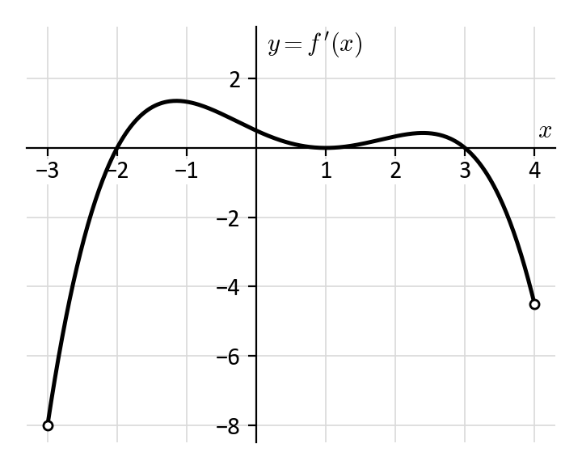

Paper first, then check in. Give yourself 15 minutes for the five problems on paper, no calculator, the way the real test runs. Then open each card. If you already have an answer, press Check my answer from paper: one try. Right, and you can skip to Look back for a faster route or a variation. Not right, or not sure, and the walk-through takes it one step at a time: Understand, Plan, Carry out, Look back.
Every wrong choice has a story. The test writers build the wrong answers out of the slips people actually make. When you pick one here, the page tells you which slip leads there, so you can spot it next time.
Your place is saved in this browser, so you can stop and come back. Bring the one card that bugged you most to our check-in.

Goal: Read where \(f\) rises and falls from the sign of \(f’\), and find where it switches from rising to falling. The MFT often shows the graph of \(f’\) (or \(f’’\)) and asks about \(f\). The question is always about signs: where the graph is above or below the axis, and where that changes.
Goal: Use rank–nullity and the size of the column space to decide each statement. Rank–nullity and “where does the column space live?” settle most MFT questions about solving \(A\mathbf{x} = \mathbf{b}\) without writing down a matrix.
Goal: Raise \(1+i\) to the tenth power by squaring first, and check the result with polar form. Powers and roots of complex numbers are a routine MFT item. Squaring first, or switching to polar form \(re^{i\theta}\), turns them into one line.
Goal: Count the strings by placing the 0s first and dropping the 1s into the gaps between them. The “gaps” trick (place the unrestricted things, then slot the restricted ones between them) handles MFT counting questions about people who can’t sit together, books that can’t be adjacent, and so on.
Goal: Build the margin of error from the critical value and the standard error \(\frac{\sigma}{\sqrt n}\). The MFT’s statistics questions are mostly about this formula and what it means: which \(z^*\), why \(\sqrt n\), and how the margin changes with \(n\) or the confidence level.